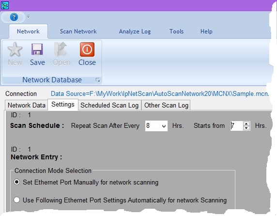

When we click on Scheduled Scan this application scans the network only if current computer time is as per scheduled time. For example we have set to scan schedule as after every 8 hours starting from 7:00 hrs; we can scan the network at 07:00 Hrs 15:00 Hrs and 23:00 Hrs (With certain time margin). Ping results of these schedule scan get recorded in Schedule Scan Log. However we can scan the network at any time by clicking on Other Scan however report of this scanning will be stored in Other Scan Log
Whenever we want to scan the network using this application; it is necessary to connect the computer on which this application is running into the network to be scanned. Generaly this is done manually by changing IP setting of respective computer. However it is possible to do it automatically if IP settings and MAC address of correct NIC is given here